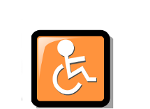

- Queremos equipos útiles para todos, sin importar las circunstancias físicas. Por ello proporcionamos herramientas que hacen de MAX un sistema operativo muy accesible.
- Puede disponer de todas esas herramientas en un único lugar: el menú de Acceso Universal. Desde allí podrá activar herramientas útiles como Orca (para escuchar texto en pantalla), Onboard para controlar un teclado virtual o Kmagnifier para usar una lupa que facilita la lectura.
- No olvide examinar también en el menú de Preferencias las relativas a Acceso Universal y Apariencia. Podrá elegir entre varios estilos visuales diferentes e incluso cambiar las tipografías que usan las aplicaciones.
